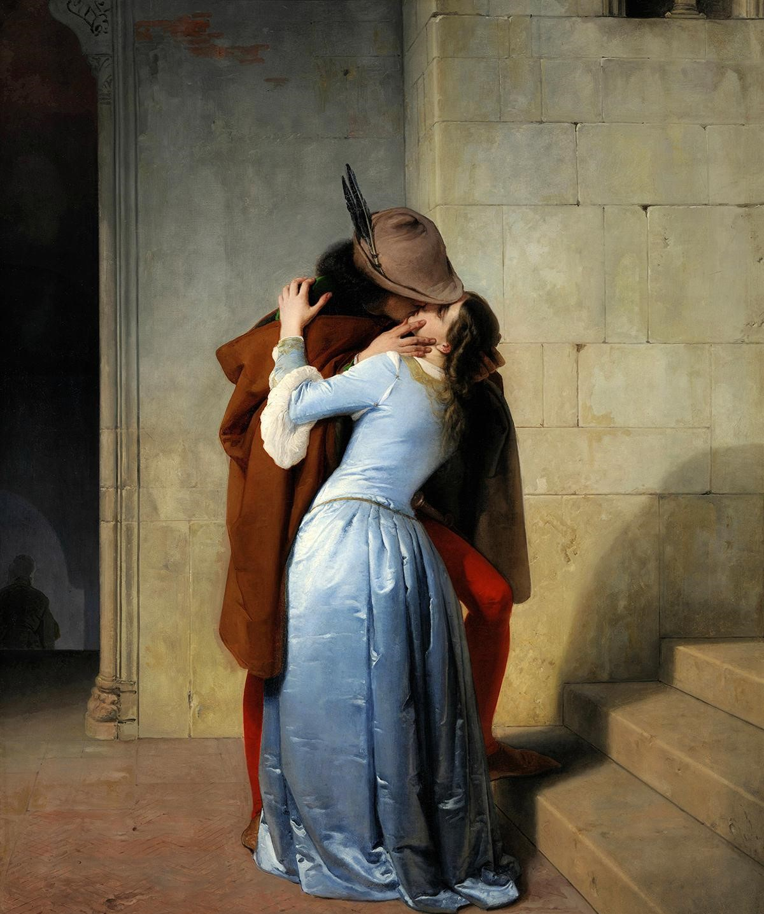

The Kiss
Il bacio is an 1859 painting by the Italian artist Francesco Hayez. It is possibly his best known work. This painting conveys the main features of Italian Romanticism and has come to represent the spirit of the Risorgimento.
wikipedia
